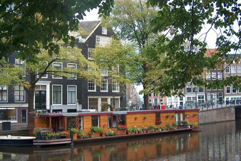

The Dutch United Provinces declared their independence from Spain in ; during the 17th century, they became a leading seafaring and commercial power, with settlements and colonies around the world. After a 20-year French occupation, a Kingdom of the Netherlands was formed in . In , Belgium seceded and formed a separate kingdom.
The Netherlands remained neutral in World War I, but suffered German invasion and occupation in World War II. A modern, industrialized nation, the Netherlands is also a large exporter of agricultural products. The country was a founding member of NATO and the EEC (now the EU) and participated in the introduction of the euro in . In , the former Netherlands Antilles was dissolved and the three smallest islands Bonaire, Sint Eustatius, and Saba became special municipalities in the Netherlands administrative structure.
The larger islands of Sint Maarten and Curacao joined the Netherlands and Aruba as constituent countries forming the Kingdom of the Netherlands.In , the Sint Eustatius island council (governing body) was dissolved and replaced by a government commissioner to restore the integrity of public administration. According to the Dutch Government, the intervention will be as "short as possible and as long as needed."
Geography
Location
The Netherlands is located in Western Europe, bordering the North Sea, between Belgium and Germany. It's located at mouths of three major European rivers (Rhine, Maas or Meuse, and Schelde); about a quarter of the country lies below sea level and only about half of the land exceeds one meter above sea level.
Land Boundaries
Country
Distance (km)
Belgium
478 km
Germany
575 km
Climate
Temperate
Marine
Cool summers
Mild winters
Natural Resources
natural gas
petroleum
peat
limestone
salt
sand
gravel
arable land
Economy

Overview
The Netherlands, the sixth-largest economy in the European Union, plays an important role as a European transportation hub, with a consistently high trade surplus, stable industrial relations, and low unemployment. Industry focuses on food processing, chemicals, petroleum refining, and electrical machinery. A highly mechanized agricultural sector employs only 2% of the labor force but provides large surpluses for food-processing and underpins the country’s status as the world’s second largest agricultural exporter.
The Netherlands is part of the euro zone, and as such, its monetary policy is controlled by the European Central Bank. The Dutch financial sector is highly concentrated, with four commercial banks possessing over 80% of banking assets, and is four times the size of Dutch GDP.
Exports
What is Exported?
machinery
transport
equipment
chemicals
mineral fuels
food
livestock
manufactured goods
Exports From?
Country
Percent Exported
Germany
24.2%
Belgium
10.7%
United Kingdom
8.8%
France
8.8%
Italy
4.2%
Imports
What is Imported?
machinery
transport
equipment
chemicals
fuels
foodstuffs
clothing
Imports From?
Country
Percent Imported
China
16.4%
Germany
15.3%
Belgium
8.5%
United States
6.9%
United Kingdom
5.1%
Russia
4.3%
Gross Domestic Product (official exchange rate)
$ 907.042 billion ( est.)
Real GDP growth Rate
Year
Growth in Billions
2017
3.02%
2018
2.32%
2019
1.63%
Agriculture
Agricultural Products
milk
potatoes
sugar beet
pork
onions
wheat
poultry
tomatoes
carrots/turnips
beef
GDP - composition, by sector of origin
Sector
Percentage ()
Agriculture:
1.6%
Industry:
17.9%
Services:
70.2%
Industries
agroindustries
metal
engineering products
electrical machinery
equipment
chemicals
petroleum
construction
microelectronics
fishing
People and Society
Population
The Netherlands has a population estimated at 17.2 million () with a growth rate of 0.38% (2018). Nederlanders or the Dutch, are a West Germanic ethnic group and nation native to the Netherlands. They share a common ancestry and culture and speak the Dutch language.
Language
Dutch (official)
Frisian
Low Saxon
Limburgish
Romani
Yiddish
Ethnicity
Type
Percentage
Dutch
76.9%
European Union
6.4%
Turkish
2.4%
Moroccan
2.3%
Indonesian
2.1%
German
2.1%
Surinamese
2%
Polish
1%
Other
4.8%
Communications
Internet Country Code
Netherland's country code is .nl
The country's official government web site can be found at: www.government.nl
Internet Users
A estimate notes 94.71% percent of the Netherlands population (16,243,928) has access to the internet.
Broadband
A estimate notes a total: 7,406,700 (43 of 100) inhabitants have a subscription to a broadband internet.